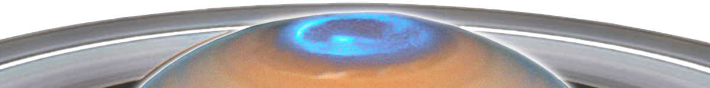

Saturno é o sexto planeta a partir do Sol e o segundo maior do Sistema Solar atrás de Júpiter.
Pertencente ao grupo dos gigantes gasosos, possui cerca de 95 massas terrestres e orbita a uma distância média de 9,5 unidades astronômicas.
Uma das características mais notáveis de Saturno é seu complexo e proeminente sistema de anéis, formados por gelo de água.
Font: Youtube.
